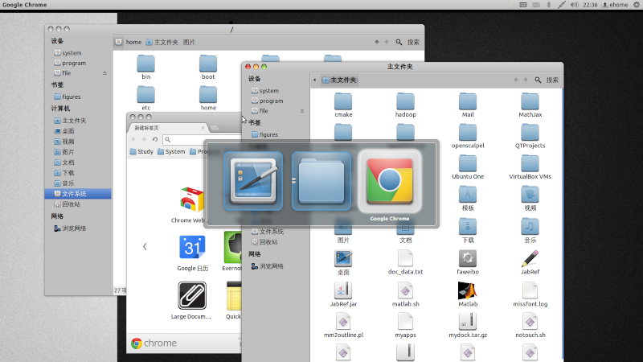
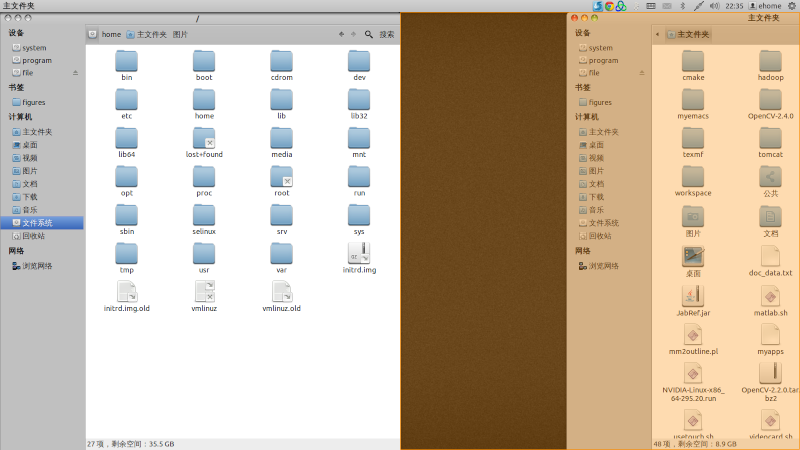
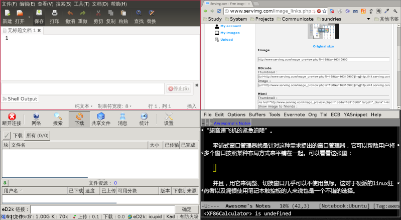
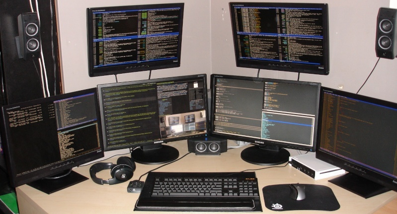
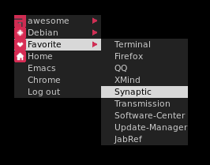
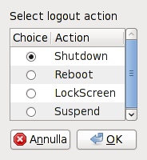
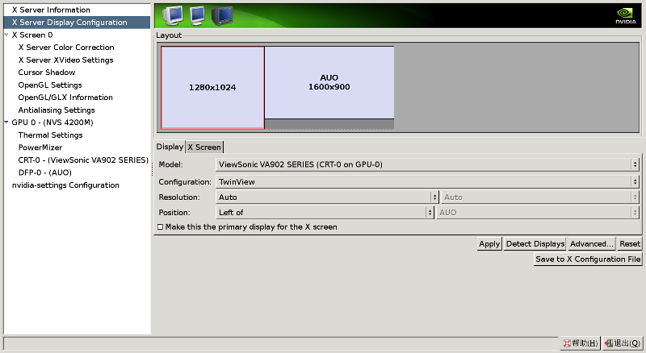

Awesome入门指南
Table of Contents
1 Awesome简介
1.1 什么是窗口管理器？
这里首先需要解释一下窗口管理器(Windows Manager)和桌面环境(Desktop Environment)的概念。窗口管理器负责绘制窗口的边框，处理窗口运行比如移动、最小化之类的行为。而桌面环境则是窗口管理器的超集，它使用窗口管理器及其其他软件提供一个完整的工作环境。比如说，gnome就是一个桌面环境，默认使用Metacity作为窗口管理器。
1.2 什么是平铺式窗口管理器？
那么什么是平铺式窗口管理器？简单来说，所谓的平铺就是之所有的窗口都不会相互重叠，而是 自动的 被调整大小使得它们能够刚好占满整个屏幕。
以往的窗口管理器大多是浮动式窗口管理器，由于屏幕空间有限，当前激活的窗口会浮在最上面，而遮住下面的窗口。如果你同时打开了多个窗口并进行操作，那么你就需要不停的按Alt+Tab来回切换，这有时会让人感到眼花缭乱。

浮动式窗口管理器的问题
如果窗口之间不遮掩，那么就没有了这个问题。当然，手动调整窗口大小和位置可以达到这个效果，但这绝对不会是一件让人喜欢干的事情。于是Compiz、KDE，甚至Windows 7之后的窗口管理器都提供了粘性窗口，可以让窗口在靠近边缘的时候铺满半屏或满屏，如下面这张图：

粘性窗口
但这种做法仍然有不足之处：
- 只能平铺不多于两个窗口，如果当前有三个以上的窗口的时候，依然会存在遮掩。对此，Compiz的解决方式是自动将被遮掩的窗口移动到其他桌面，但相信不止我一个人曾被这种古怪的设计搞晕。
- 仍然需要用鼠标手动平铺，这对于正在高速敲键盘的码农而言，无疑是“超音速飞机的紧急迫降”。
平铺式窗口管理器就是针对这种需求提出的窗口管理器，它可以帮助用户将多个窗口按照某种布局方式来平铺在一起。可以看看这张图：

平铺式窗口管理器
并且，用它来调整、切换窗口几乎可以不使用鼠标。这对于硬派的linux狂热者以及痛恨使用笔记本触控板的人来说也是一个不错的选择。
1.3 为什么是Awesome？
平铺式窗口管理器并不是一个新概念，在施乐公司几十年前最早开始研究图形界面的时候就已经有了平铺的概念了（尽管和现在我说的不太一样），linux下面也有不少成熟的平铺式窗口管理器–Ion, XMonad都是有名的平铺窗口管理器。但是比较之下Awesome有不少鲜明的特点：
- 体积小，运行迅速，占用资源少。不过在3.0以后的版本似乎向变得巨大和缓慢的方向发展的趋势。
- 支持多种窗口布局。Awesome并不仅仅支持平铺，它还支持好几种各不相同的窗口布局方案。
- 使用Lua脚本的配置文件，灵活性高。由于lua脚本的强大能力，Awesome 3.0甚至把窗口管理器运行的逻辑部分放到了配置文件里面。好处是这使得很多其他窗口管理器里面不可能做到的用法在这里变成了可能，坏处是配置文件及其庞大和复杂。
- 更新迅速。它的作者一直在不停地完善Awesome，每次版本升级都能带来一些方便的新特性。不过弊端是造成了Awesome的配置文件一直都在改变，说不定什么时候自己以前的配置文件就不能用了。
- 良好的鼠标支持。比起其他平铺式窗口管理器，Awesome的一大优势是它能够提供良好的鼠标支持。只要你喜欢，Awesome完全可以当作一个浮动窗口管理器来使用，但对于键盘控而言，真正吸引他们的当然是Awesome强大的键盘控制能力。
- 多显示器支持。Awesome支持多显示器间的窗口管理，这是官网上的一张照片：

Awesome的多显示器支持
总而言之，对于喜欢折腾自己电脑的人来说，Awesome是一个很不错的玩具。
2 安装Awesome
Awesome一个最新的稳定版本（3.4.11）已经包含在Ubuntu 12.04的源里，因此对于Ubuntu 12.04的用户，安装Awesome非常简单：
$ sudo apt-get install awesome
如果需要编译安装Awesome，请参考Awesome的官方wiki编译指南。
Awesome提供了一个设置文件 rc.lua ，放在 /etc/xdg/Awesome/ 里，需要把它拷贝到~/.config/Awesome/里。
3 Awesome初窥
3.1 切换Awesome
安装完Awesome后，注销当前用户回到用户选择界面，然后选择使用Awesome桌面环境。对于Ubuntu用户，在用户选择菜单的右上角有一个按钮，点击之后会打开一个桌面环境选择菜单，选择“Awesome”登陆即可。
3.2 状态栏
第一次启动Awesome后会发现整个屏幕只有一个空空的桌面和顶部的一条类似Windows任务栏的东西。这条任务栏叫做状态栏（Status Bar）。
3.3 主菜单
状态栏的最左侧是Awesome的图标，点击它将会打开一个小菜单，这就是Awesome的主菜单，再点击一次图标就可以将这个菜单关闭。
3.4 标签
在Awesome图标的右侧可以看到阿拉伯数字1-9，这些叫做标签（Tag），类似GNome或者KDE下的虚拟桌面。
3.5 布局切换器
在状态栏最右侧是布局切换器，布局（Layout）是根据屏幕上的可用空间来调整窗口位置、尺寸的方式。Awesome支持多种布局：
- 平铺 Tiled
平铺模式下屏幕被分为master和stacking两个区域。master中的窗口包含了需要最多关注的窗口（通常这表示master中的窗口会占据更大的屏幕空间），而stacking区域中包含了其它窗口。如果你想的话master区域可以被划分为多行和多列。
- 最大化 Max
每个窗口都是全屏显示。
- 放大 Magnifier
当前窗口（也就是被鼠标点选中，正在操作的窗口）会显示在屏幕中间，占据大部分屏幕空间。剩下的窗口都处在stacking区域，并放到当前窗口的后面。
- 浮动 Floating
每个窗口都可以自由的移动和调整大小，就好像普通的窗口管理器一样。无论当前是什么布局，对话框窗口总是处在浮动状态。
- 螺旋 Spiral
和平铺有点类似，但窗口的调整采用了螺旋形的排列方式。
4 常用快捷键
下面是常用的一些快捷键组合。注意：在默认情况下，Mod4被映射到Win键，即Ctrl和Alt中间夹着的那个Windows徽标键，它可以根据你的喜好来更改。
Mod4 + Enter 打开终端
Mod4 + r 执行程序或命令
Mod4 + w 打开Awesome主菜单（鼠标右键关闭）
Mod4 + Shift + c 关闭当前窗口或应用
Mod4 + Control + r 重启Awesome
Mod4 + Shift + q 退出Awesome
Mod4 + j 切换到下一个窗口
Mod4 + k 切换到前一个窗口
Mod4 + Left 查看前一个tag
Mod4 + Right 查看后一个tag
Mod4 + 1-9 切换到tag 1-9
Mod4 + Control + j 切换到下一个屏幕
Mod4 + Control + k 切换到上一个屏幕
Mod4 + Shift + j 当前窗口和前一个窗口互换位置
Mod4 + Shift + k 当前窗口和后一个窗口互换位置
Mod4 + h 把主区域的宽度增大5%
Mod4 + l 把主区域的宽度减少5%
Mod4 + m 最大化窗口
Mod4 + n 最小化窗口
Mod4 + Shift + h 增加主区域窗口的数量
Mod4 + Shift + l 减少主区域窗口的数量
Mod4 + Space 切换窗口布局
Mod4 + Shift + space 把当前tag更换为前一种布局
Mod4 + Control + space 切换当前窗口是否为浮动
Mod4 + Shift + i 显示当前窗口的Class和instance，这在写脚本的时候尤其有用
Mod4 + Shift + r 重绘当前窗口
Mod4 + t 标记窗口（可标记多个）
Mod4 + Shift + F1~F9 把标记的窗口移动到第1~9个标记上
Ctrl + Mod4 + 1~9 把当前桌面和1~9桌面是显示
Mod4 + 1~9 恢复
Mod4 + Esc 快速切换到上一个桌面
5 定制Awesome
5.1 找回Gnome的指示器
第一次启动，会发现原本Gnome下的电源管理指示器、网络指示器都不见了，还有Gnome程序的主题变得很难看。
如果是使用startx/slim等命令来启动X的，可以通过修改 ~/.xinitrc 来解决这些问题。参考这个例子：
#!/bin/sh #启用gnome的主题 gnome-settings-daemon & #电源管理程序 gnome-power-manager & #网络管理程序 nm-applet --sm-disable & #自动更新程序 update-notifier & exec awesome
完成后重启一下，看看网络指示器是不是回来了。
如果是用kdm/gdm/…等工具来登录管理器的话，这时应该修改的是 ~/.xprofile 里的内容。因为系统默认将执行 ~/.xprofile 文件的命令，而会忽略 ~/.xinitrc 。将上面的内容保存成 ./xprofile 文件即可，或者干脆使用下面这条命令：
$ ln -s ~/.xinitrc ~/.xprofile
将.xprofile链接到.xinitrc上。
5.2 定制布局和标签
5.2.1 定制布局
如果希望改变默认的布局和修改布局的切换顺序，可以通过修改 rc.lua 文件来实现。找到像这样的一段代码：
layouts =
{
awful.layout.suit.floating,
awful.layout.suit.tile,
awful.layout.suit.tile.left,
awful.layout.suit.tile.bottom,
awful.layout.suit.tile.top,
awful.layout.suit.fair,
awful.layout.suit.fair.horizontal,
awful.layout.suit.spiral,
awful.layout.suit.spiral.dwindle,
awful.layout.suit.max,
awful.layout.suit.max.fullscreen,
awful.layout.suit.magnifier
}
这是所有Awesome提供的布局方案，并且是按切换顺序排列的。可以通过调整顺序来改变实际的布局切换顺序。如果不喜欢其中的一些布局方案，你可以把相应的代码给去掉。比如，对于我而言，全屏、放大和螺旋式布局都是不常用的，并且我希望第一个布局是平铺，而不是浮动，因此可以改成：
layouts =
{
awful.layout.suit.tile,
awful.layout.suit.tile.left,
awful.layout.suit.tile.bottom,
awful.layout.suit.tile.top,
awful.layout.suit.fair,
awful.layout.suit.fair.horizontal,
awful.layout.suit.floating,
awful.layout.suit.max
}
完成后保存修改，然后按 Mod4 + Control + r 重启 Awesome看看变化。
5.2.2 浮动窗口
有些程序的窗口不适合采用平铺的方式，比如Firefox的下载窗口，或者Gimp的图层窗口、工具栏窗口等，这时候我们希望将这样的窗口设置为浮动：
-- 需要自动设置为浮动的程序
-- 只需要把你想要设置为浮动窗口的程序的Instance或者class按照下面的格式写进去就行
-- 了。在awesome下用Mod4 + Ctr + i就可以看到当前程序的instance和class名字
-- {{{ Rules
awful.rules.rules = {
-- All clients will match this rule.
{rule = {},
properties = {border_width = beautiful.border_width,
border_color = beautiful.border_normal,
focus = true,
keys = clientkeys,
buttons = clientbuttons}},
{rule = {class = "MPlayer"},
properties = {floating = true}},
{rule = {class = "Smplayer"},
properties = {floating = true, tag = tags[1][6]}},
{ rule = { class = "pinentry" },
properties = { floating = true } },
{ rule = { class = "gimp" },
properties = { floating = true } },
{rule = {class = "Firefox"},
properties = {tag = tags[1][1]}},
{rule = {class = "Firefox", name = "Download"},
properties = {floating = true}},
{rule = {class = "VirtualBox"},
properties = {floating = true, tag = tags[1][2]}},
-- Set Firefox to always map on tags number 2 of screen 1.
-- { rule = { class = "Firefox" },
-- properties = { tag = tags[1][2] } },
} -- }}}
5.2.3 定制标签
只要你愿意，你可以为每一个标签命名，并为每一个标签设置默认布局。这是 rc.lua 里默认的标签设置：
-- {{{ Tags
-- Define a tag table which hold all screen tags.
tags = {}
for s = 1, screen.count() do
-- Each screen has its own tag table.
tags[s] = awful.tag({ 1, 2, 3, 4, 5, 6, 7, 8, 9 }, s, layouts[1])
end
-- }}}
#+END_EXAMPLE
现在我们可以改变每个标签的名字，并为每一个设置默认布局。参考下面这段代码：
#+BEGIN_EXAMPLE
-- {{{ Tags
-- Define a tag table which will hold all screen tags.
tags = {
names = { "main", "www", "im", "gimp", "office", "music", "virtual", 8, 9 },
layout = { layouts[1], layouts[8], layouts[8], layouts[7], layouts[1],
layouts[7], layouts[8], layouts[1], layouts[1]
}}
for s = 1, screen.count() do
-- Each screen has its own tag table.
tags[s] = awful.tag(tags.names, s, tags.layout)
end
-- }}}
在这个例子中，我们还为前5个标签分别命名为"main", "www", "im", "gimp" 和 "office"，你可以根据自己的喜好进行更改。另外，我们还使用 layouts 来指定每一个标签的布局，"[]"里的数字就是我们刚刚 定制布局 的时候设置的布局的顺序，例如[ 1 ]就是第1个布局。
5.3 设置默认终端和编辑器
可以在 rc.lua 中修改下面的代码来设置默认的终端和编辑器：
terminal = "xterm" editor = os.getenv("EDITOR") or "nano"
5.4 修改Mod键
要修改默认的Mod键，可以在 rc.lua 中修改这一句话：
modkey = "Mod4"
将"Mod4"改为其他按键即可。
5.5 美化Awesome
5.5.1 更换Awesome主题
觉得默认的主题不够漂亮？Awesome自带了三套主题： default 、 sky 和 zenburn 。要更换主题，可以打开 rc.lua 配置文件，找到这一行内容：
beautiful.init("/usr/share/awesome/themes/default/theme.lua")
把其中的 default 更换成其他主题名字即可。如果嫌主题太少，这里有很多PP的用户定制主题：Beautiful_themes 。到它的 Github主页 下载下来然后拷贝到~/.config/awesome/themes即可以使用。
5.5.2 更换背景图片
不喜欢那个黑不溜秋的背景图片？可以修改一下你正在使用的主题的theme.lua文件，将这一句
theme.wallpaper_cmd = { "awsetbg /usr/share/awesome/themes/default/background.png" }
里的图片的文件路径更改为你喜欢的图片的文件路径即可。
5.5.3 修改主菜单
可以通过修改 rc.lua 的相应内容来定制主菜单的内容。下面是我的配置。里面的设置完全根据我个人口味，而且用了几个第三方的icon。因此代码仅供参考，不建议照搬：
-- {{{ Menu
-- Create a laucher widget and a main menu
myawesomemenu = {
{ "manual", terminal .. " -e man awesome" },
{ "edit config", editor_cmd .. " " .. awesome.conffile },
{ "restart", awesome.restart },
{ "quit", awesome.quit }
}
-- 创建一个favorite子菜单
myfavoriteapps = {
{ "Terminal", terminal },
{ "Firefox", "firefox" },
{ "QQ", "qq2012"},
{ "XMind", "/usr/local/xmind/xmind" },
{ "Synaptic", "gksudo synaptic" },
{ "Transmission", "transmission-gtk"},
{ "Software-Center", "gksudo software-center" },
{ "Update-Manager", "gksudo update-manager" },
{ "JabRef", "sh /home/ehome/JabRef.sh" }
}
mymainmenu = awful.menu({ items = { { "awesome", myawesomemenu, beautiful.awesome_icon },
{ "Debian", debian.menu.Debian_menu.Debian , theme.deb_icon },
-- 添加Favorite菜单，并将icon设置为theme.fav_icon
{ "Favorite", myfavoriteapps, theme.fav_icon },
{ "Home", "dolphin" , theme.home_icon },
-- 添加Emacs菜单项
{ "Emacs", "emacs" },
-- 添加Chrome菜单项
{ "Chrome", "google-chrome" },
-- 添加一个关机对话框
{ "Log out", "/usr/local/shutdown.sh" }
}
})
mylauncher = awful.widget.launcher({ image = image(beautiful.awesome_icon),
menu = mymainmenu })
-- }}}
修改的主菜单如右图所示。

修改后的主菜单
5.6 关机对话框
Awesome有个让人有点不习惯的地方是没有一个可视化的关机对话框。如果不想每次关机都得手动敲命令，可以写一个shell脚本，实现一个可视化的关机对话框，如下图所示。

关机对话框
为了正确执行这个脚本，你需要确保系统已经安装了下列的程序：
- zenity （用来产生对话框）
- gksudo （可视化获取系统权限）
- pm-utils （用来和dbus一起实现挂起功能）
- dbus （实现挂起功能）
- hal （管理硬件）
- slock （实现屏幕锁定）
之后创建一个脚本，保存为 shutdown_dialog.sh ，并在里面添加下面的内容：
#!/bin/sh ACTION=`zenity --width=90 --height=200 --list --radiolist --text="Select logout action" --title="Logout" --column "Choice" --column "Action" TRUE Shutdown FALSE Reboot FALSE LockScreen FALSE Suspend` if [ -n "${ACTION}" ];then case $ACTION in Shutdown) zenity --question --text "Are you sure you want to halt?" && gksudo halt ## or via ConsoleKit # dbus-send --system --dest=org.freedesktop.ConsoleKit.Manager \ # /org/freedesktop/ConsoleKit/Manager org.freedesktop.ConsoleKit.Manager.Stop ;; Reboot) zenity --question --text "Are you sure you want to reboot?" && gksudo reboot ## Or via ConsoleKit # dbus-send --system --dest=org.freedesktop.ConsoleKit.Manager \ # /org/freedesktop/ConsoleKit/Manager org.freedesktop.ConsoleKit.Manager.Restart ;; Suspend) #gksudo pm-suspend dbus-send --system --print-reply --dest=org.freedesktop.Hal \ /org/freedesktop/Hal/devices/computer \ org.freedesktop.Hal.Device.SystemPowerManagement.Suspend int32:0 # HAL is deprecated in newer systems in favor of UPower etc. # dbus-send --system --dest=org.freedesktop.UPower /org/freedesktop/UPower org.freedesktop.UPower.Suspend ;; LockScreen) slock # Or gnome-screensaver-command -l ;; esac fi
完成后，修改 rc.lua ，给主菜单添加一个菜单项：
{"Log out", 'your/path/to/shutdown_dialog.sh'},
5.7 使用dmenu
自带的 Mod4 + X 启动工具搜索能力有限，例如，搜索 'dc' 只会找到以 'dc' 开头的程序，e.g. 'dcgui' 或 'dc2k'；而使用dmenu的话，可以找到任何包含 'dc' 字段的程序，e.g. 'linuxdcpp'。因此，推荐使用dmenu取而代之。
将 rc.lua 的相应内容修改为：
-- Prompt
-- awful.key({ modkey }, "r", function () mypromptbox[mouse.screen]:run() end),
awful.key({ modkey }, "r",
function ()
local f_reader = io.popen( "dmenu_path | dmenu -b -nb '".. beautiful.bg_normal .."' -nf '".. beautiful.fg_normal .."' -sb '#955'")
local command = assert(f_reader:read('*a'))
f_reader:close()
if command == "" then return end
-- Check throught the clients if the class match the command
local lower_command=string.lower(command)
for k, c in pairs(client.get()) do
local class=string.lower(c.class)
if string.match(class, lower_command) then
for i, v in ipairs(c:tags()) do
awful.tag.viewonly(v)
c:raise()
c.minimized = false
return
end
end
end
awful.util.spawn(command)
end),
awful.key({ modkey }, "x",
function ()
awful.prompt.run({ prompt = "Run Lua code: " },
mypromptbox[mouse.screen].widget,
awful.util.eval, nil,
awful.util.getdir("cache") .. "/history_eval")
end),
6 多显示器支持
Awesome的一大强处在于可以同时控制多个显示器的窗口。你可以随心所欲的把某个窗口移动到另一个显示器上，并且不同的显示器可以使用不同的标签，因此可以组合出各种布局效果。具体的快捷键已经在 常用快捷键 提及。
要使用多个显示器，首先要确保其他的显示器正常工作。在Awesome下，一个新的显示器插入之后并不能立即工作，而需要先经过设置。不同的显卡有不同的设置方法。详细的方法请参考 官方的多显示器设置教程 。由于我使用的是 nvidia 独显驱动，因此我主要介绍使用 nvidia 独显的简单设置方法。
6.1 nvidia独显使用多显示器
在设置多显示器之前，建议先备份现有的 xorg.conf 文件：
$ sudo cp /etc/X11/xorg.conf /etc/X11/xorg_single.conf
新插入一个显示器后，首先以管理员身份启动 nvidia设置工具（nvidia-settings），如果配好了 dmenu，也可以 Mod4 + r 然后输入
gksudo nvidia-settings
启动 nvidia设置工具 。然后选择 X Server Display Configuration，如图所示。点击当前为Disabled的那个显示器，然后在 Configuration 设为 TwinView，再根据喜好设Position。如果需要将这个显示器设为主显示器，则勾选“Make this the primary display for the X screen”。完成后 不要 点击"Apply"按钮，而是点击 "Save to X Configuration File"，覆盖原来的 xorg.conf 文件。

nvidia设置多显示器
退出nvidia-settings，然后重启X，或者注销后再登录，此时另一个显示器已经开始工作。
6.2 使用投影仪
如果是投影仪，通常不需要扩展屏幕，而是同步显示器和投影仪的画面。因此 Position 需要设置为 Clones，而且由于大部分的投影仪分辨率都是 1024*768 ，因此需要将主显示器的 Resolution 也设置为 1024*768。
6.3 单显示器和多显示器间的切换
为了方便以后在单显示器和多显示器之间切换，可以将现在的 xorg.conf 备份为 xorgmul.conf 文件。这样，以后要切换单显示器或多显示器时，只需要使用cp命令将对应的配置文件覆盖当前的 xorg.conf 文件即可。
7 插件
7.1 什么是插件？
Awesome里的插件指的是你可以在 wibox 上添加的小插件，通过使用插件（Widget），我们可以在状态栏上添加一些有用的信息，例如内存使用、CPU温度、电池状态，等等。官方wiki上有很详细的介绍：http://awesome.naquadah.org/wiki/Widgets_in_awesome
对于新手，可以使用其他用户创建的插件库，这些插件库集成了功能齐全的插件，因此免去了自己编写插件的工作。这类的插件库有很多，常用的有Vicious、 Obvious 等。
7.2 创建插件
要创建插件，可以使用 widget() 函数，例如：
mysystray = widget({type = "systray"})
myicon = widget({ type = "imagebox" })
myicon.image = image(awful.util.getdir("config") .. "/myicon.png")
mytextbox = widget({ type = "textbox" })
mytextbox.text = "Hello, world!"
7.3 插件的类型
使用 widget() 函数创建插件的时候需要指定插件类型，Awesome自带的插件包括：
- systray
系统托盘插件。Awesome默认已经添加，就在状态栏上位于日期和时间左侧的区域。对于一些支持最小化到系统托盘的程序，例如ibus、chrome、shutter等，它们的图标将被放置在这里。
- imagebox
展示一张图片。常用来和textbox一起搭配使用，创建启动器、图标和分隔符。这里 收集了很多精美的图标。
- textbox
textbox插件用来显示一段文本，这是最常用的插件。例如，在创建插件部分我们已经创建了一个名为mytextbox的textbox插件，并且插件显示的文本内容是"Hello, World!"。要修改文本内容，可以直接修改 rc.lua 文件中的相应代码，或在终端中使用下面命令：
$ echo "mytextbox.text = \"Foo Bar!\"" | awesome-clientAwesome还提供了计时器的API， 允许我们周期性的执行或更新插件。例如：
mytimer = timer({ timeout = 30 }) mytimer:add_signal("timeout", function() mytextbox.text = "Hello awesome world!" end) mytimer:start()textbox的文本属性（颜色、字体）是可以通过使用 Pango 标记语言来修改。最简单的例子是：
mytextbox.text = '<span color="white">Sacrebleu, I have seen a ghost!</span> '要了解更多textbox的设置，例如改变背景颜色、边框、文本对齐等，可以参看Awesome的API文档。
7.4 实用插件
Awesome的官方Wiki 收集了丰富的插件。下面介绍其中几个实用的插件。
7.4.1 音量控制插件
Awesome 自己不提供音量控制插件，如果未经设置，还会发现原本键盘上的多媒体按键都会失效，这是因为没有让 Awesome 绑定这些热键。下面实现一个音量控制插件，并且将音量控制绑定到多媒体键盘的音量加（XF86AudioRaiseVolume）、音量减（XF86AudioLowerVolume）、静音（XF86AudioMute）几个按键上。
首先实现一个音量控制插件，将它保存为 ~/.config/awesome/volume.lua：
-- Create a volume control
volume_widget = widget({ type = "textbox", name = "tb_volume",
align = "right" })
function update_volume(widget)
local fd = io.popen("amixer sget Master")
local status = fd:read("*all")
fd:close()
local volume = tonumber(string.match(status, "(%d?%d?%d)%%")) / 100
-- volume = string.format("% 3d", volume)
status = string.match(status, "%[(o[^%]]*)%]")
-- starting colour
local sr, sg, sb = 0x3F, 0x3F, 0x3F
-- ending colour
local er, eg, eb = 0xDC, 0xDC, 0xCC
local ir = volume * (er - sr) + sr
local ig = volume * (eg - sg) + sg
local ib = volume * (eb - sb) + sb
interpol_colour = string.format("%.2x%.2x%.2x", ir, ig, ib)
if string.find(status, "on", 1, true) then
volume = " <span background='#" .. interpol_colour .. "'> </span>"
else
volume = " <span color='red' background='#" .. interpol_colour .. "'> M </span>"
end
widget.text = volume
end
update_volume(volume_widget)
awful.hooks.timer.register(1, function () update_volume(volume_widget) end)
然后编辑 rc.lua ，在开头引入这个插件：
-- Volume contrl
require("volume")
在 wibox 中添加这个插件，例如放在系统托盘的右侧：
mywibox[s].widgets = {
{
..
volume_widget,
s == 1 and mysystray or nil,
..
最后绑定到几个多媒体键：
-- volume control
awful.key({ }, "XF86AudioRaiseVolume", function ()
awful.util.spawn("amixer set Master 9%+") end),
awful.key({ }, "XF86AudioLowerVolume", function ()
awful.util.spawn("amixer set Master 9%-") end),
awful.key({ }, "XF86AudioMute", function ()
awful.util.spawn("amixer sset Master toggle") end),
这个插件将在状态栏放置一个亮度随音量大小改变的白色小方块，当系统处于静音状态时，图标将变为一个红色的 M 字符。
7.4.2 天气插件
这个插件基于命令行天气工具 weather-util 。添加了这个插件后，状态栏将出现一个显示当前温度的 textbox。当鼠标移动到它上面时，将会弹出一个消息框，提供更详细的天气信息。
首先，安装 weather-util：
$ sudo apt-get install weather-util
然后，编写 weather.lua 并放入 ~/.config/awesome/ 中：
--Create a weather widget
weatherwidget = widget({ type = "textbox" })
weatherwidget.text = awful.util.pread(
"weather -i METARID --headers=Temperature --quiet -m | awk '{print $2, $3}'"
) -- replace METARID with the metar ID for your area. This uses metric. If you prefer Fahrenheit remove the "-m" in "--quiet -m".
weathertimer = timer(
{ timeout = 900 } -- Update every 15 minutes.
)
weathertimer:add_signal(
"timeout", function()
weatherwidget.text = awful.util.pread(
"weather -i METARID --headers=Temperature --quiet -m | awk '{print $2, $3}' &"
) --replace METARID and remove -m if you want Fahrenheit
end)
weathertimer:start() -- Start the timer
weatherwidget:add_signal(
"mouse::enter", function()
weather = naughty.notify(
{title="Weather",text=awful.util.pread("weather -i METARID -m")})
end) -- this creates the hover feature. replace METARID and remove -m if you want Fahrenheit
weatherwidget:add_signal(
"mouse::leave", function()
naughty.destroy(weather)
end)
-- I added some spacing because on my computer it is right next to my clock.
awful.widget.layout.margins[weatherwidget] = { right = 5 }
要注意把上面的几个 METARID 改成你所在城市的 meta ID，你可以在 这里 找到很多城市的 meta ID，例如，广州的 meta ID 是 "ZGGG" 。
完成后，在 rc.lua 的开头添加这个插件：
-- Weather forecast
require("weather")
然后在wibox中添加这个插件，例如放在 text clock 的右边：
mywibox[s].widgets = {
..
weatherwidget,
mytextclock,
..
7.4.3 电量插件
对于笔记本用户，笔记本电池的电量显示总是不可或缺的东西。及时获取当前的电池状态，可以防止因为电池电量用尽而带来不可挽回的灾难。实现电量插件有很多方法，这里介绍一个简单的基于 acpitool 的电量插件。
首先，安装 acpitool：
$ sudo apt-get install acpitool
然后，编写 power.lua 并放入 ~/.config/awesome/ 中：
mybattmon = widget({ type = "textbox", name = "mybattmon", align = "right" })
function battery_status ()
local output={} --output buffer
local fd=io.popen("acpitool -b", "r") --list present batteries
local line=fd:read()
while line do --there might be several batteries.
local battery_num = string.match(line, "Battery \#(%d+)")
local battery_load = string.match(line, " (%d*\.%d+)%%")
local time_rem = string.match(line, "(%d+\:%d+)\:%d+")
local discharging
if string.match(line, "discharging")=="discharging" then --discharging: always red
discharging="<span color=\"#CC7777\">"
elseif tonumber(battery_load)>85 then --almost charged
discharging="<span color=\"#77CC77\">"
else --charging
discharging="<span color=\"#CCCC77\">"
end
if battery_num and battery_load and time_rem then
table.insert(output,discharging.."BAT#"..battery_num.." "..battery_load.."% "..time_rem.."</span>")
elseif battery_num and battery_load then --remaining time unavailable
table.insert(output,discharging.."BAT#"..battery_num.." "..battery_load.."%</span>")
end --even more data unavailable: we might be getting an unexpected output format, so let's just skip this line.
line=fd:read() --read next line
end
return table.concat(output," ") --FIXME: better separation for several batteries. maybe a pipe?
end
mybattmon.text = " " .. battery_status() .. " "
my_battmon_timer=timer({timeout=30})
my_battmon_timer:add_signal("timeout", function()
--mytextbox.text = " " .. os.date() .. " "
mybattmon.text = " " .. battery_status() .. " "
end)
my_battmon_timer:start()
在 rc.lua 的开头添加这个插件：
-- Battery Power Control
require("power")
然后在wibox中添加这个插件，例如放在 text clock 的左边：
mywibox[s].widgets = {
..
mytextclock,
mybattmon,
..
8 其他技巧
8.1 Java程序的问题
很多 Java 程序在 Awesome 中只会呈现一个空白的窗口，这是很多非 re-parenting 的窗口管理器的通病， Awesome 也不例外。一个比较推荐的做法是在启动 Java程序前先使用 wmname 向让 JVM 说明当前在使用一个不同的窗口管理器。用法是：
wmname 窗口管理器名称
其中的窗口管理器名称需要用户从 JVM 自身包含的一个非 re-parenting 窗口管理器的列表去指定，多数用户喜欢使用：
$ wmname LG3D
来让 JVM 相信现在用的是 Sun 公司自己写的一个非 re-parenting 的窗口管理器 LG3D 。实践证明，这个命令用在 Awesome 中可以很好工作。完成后再在同个 session 中执行 Java 程序即可。
8.2 开机自启动程序
Awesome本身并没有提供自启动程序的功能，这里介绍几种方法，可以不需要借助其他工具实现自启动。更多的方法可以参考这里。
8.2.1 传统方法
我们在介绍如何 找回Gnome的指示器 的时候已经提到了.xinitrc和.xprofile这两个文件。系统在启动X时 ，默认会执行~/.xinitrc里的命令完成一些初始化工作。如果用kdm/gdm/…等登录管理器，则默认执行~/.xprofile文件的命令，而忽略~/.xinitrc。利用这个特性，我们可以通过修改~/.xinitrc或~/.xprofile文件的内容实现程序的自启动。
但要注意的是，由于.xinitrc和.xprofile主要用来在启动X时做一些初始化的工作，这个时候X可能还没启动，所以运行图形界面的程序可能会有问题。因此，这种方式比较适合用来执行一些后台命令，例如设置环境变量、启动后台服务等，而不太适合用来启动一些图形界面的程序。
8.2.2 通过修改 rc.lua 实现自启动的方法
最简单的方式是在 rc.lua 里添加类似这样的代码：
awful.util.spawn_with_shell("firefox") awful.util.spawn_with_shell("thunderbird") awful.util.spawn_with_shell("amarok") awful.util.spawn_with_shell("amule")
如果要自启动很多程序，重复写这样的语句显得有点suck，所以可以采用循环的方式：
-- Autorun programs
autorun = true
autorunApps =
{
"firefox",
"thunderbird",
"amarok",
"amule",
}
if autorun then
for app = 1, #autorunApps do
awful.util.spawn_with_shell(autorunApps[app])
end
end
其中把autorunApps中的内容替换为你想要运行的程序就可以了。
但这种自启动方式会在每次启动Awesome的时候都运行这些程序，每次需要重启Awesome时，会发现这些程序又再次启动了一次。因此最好是让这些程序只启动一次。将上面的代码改为：
function run_once(cmd) findme = cmd firstspace = cmd:find(" ") if firstspace then findme = cmd:sub(0, firstspace-1) end awful.util.spawn_with_shell("pgrep -u $USER -x " .. findme .. " > /dev/null || (" .. cmd .. ")") end run_once("amarok") run_once("xscreensaver -no-splash")
8.3 利用Naughty实现消息交互
Naughty 是 Awesome 3 中的一个 lua 库，用于实现弹出消息框。利用 Naughty，我们可以实现在后台执行命令，然后在弹出消息框中显示结果。
首先要确保 rc.lua 的开头有这一行：
require("naughty")
gentoo 用户还需要让 Awesome 添加对 dbus 的使用：
$ sudo flaggie awesome +dbus
如果想更改naughty的默认设置，可以添加下面的代码：
naughty.config.default_preset.timeout = 5 naughty.config.default_preset.screen = 1 naughty.config.default_preset.position = "top_right" naughty.config.default_preset.margin = 4 naughty.config.default_preset.height = 16 naughty.config.default_preset.width = 300 naughty.config.default_preset.gap = 1 naughty.config.default_preset.ontop = true naughty.config.default_preset.font = beautiful.font or "Verdana 8" naughty.config.default_preset.icon = nil naughty.config.default_preset.icon_size = 16 naughty.config.default_preset.fg = beautiful.fg_focus or '#ffffff' naughty.config.default_preset.bg = beautiful.bg_focus or '#535d6c' naughty.config.presets.normal.border_color = beautiful.border_focus or '#535d6c' naughty.config.default_preset.border_width = 1 naughty.config.default_preset.hover_timeout = nil
下面利用sdcv实现一个词典工具，绑定到 Mod4 + d 上，更多的例子可以参考 官方的教程 。
awful.key({ modkey }, "d",
function ()
info = true
awful.prompt.run({
fg_cursor = "black",bg_cursor="orange", prompt = "<span color='#008DFA'>sdcv:</span>" },
mypromptbox[mouse.screen].widget,
function(word)
local f = io.popen("sdcv -n " .. word)
local fr = ""
for line in f:lines() do
fr = fr .. line .. '\n'
end
f:close()
naughty.notify({ title = "<span color='red'>" .. word .. "</span>:", text = '<span font_desc="Sans 7">' .. fr ..'</span>', timeout = 5, width = 400, screen = mouse.screen })
end)
end)
)